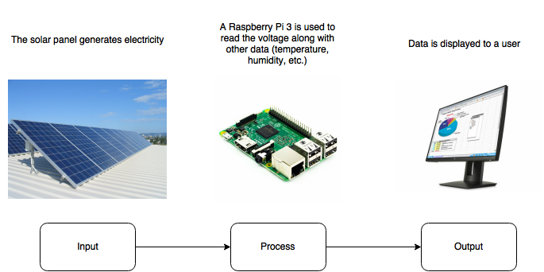
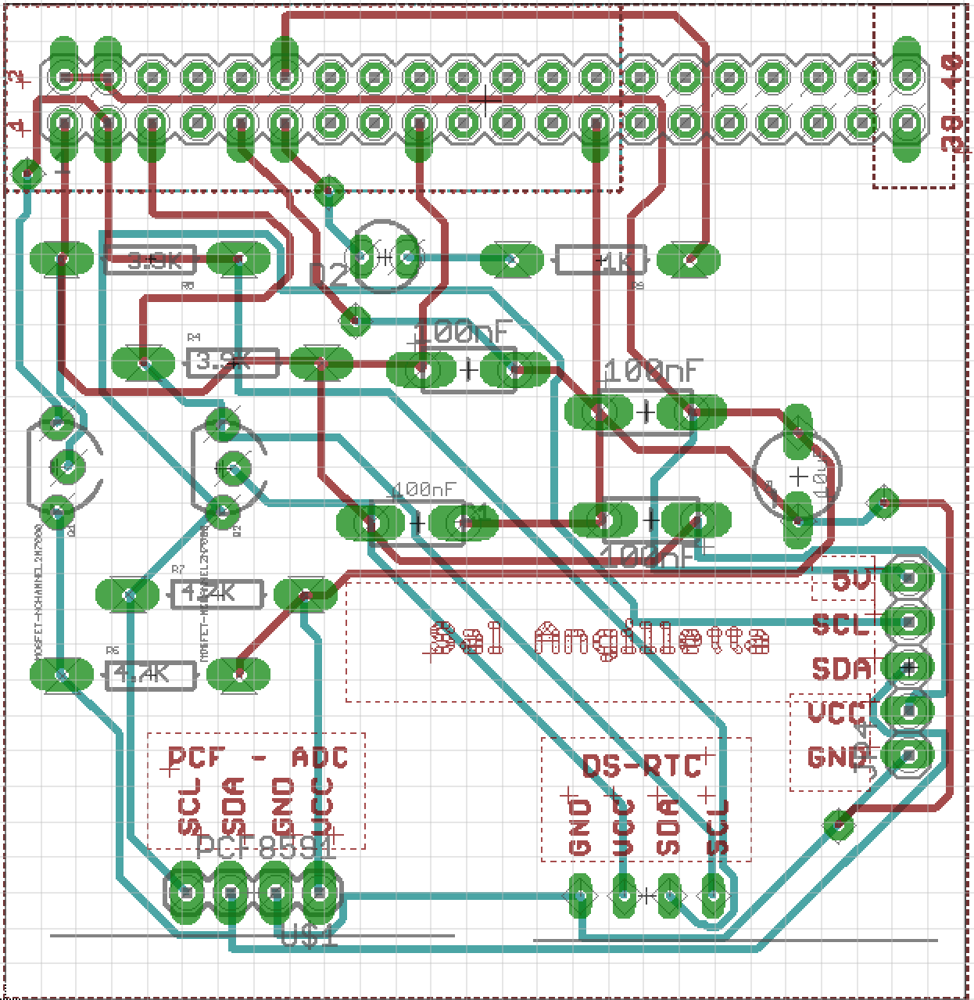
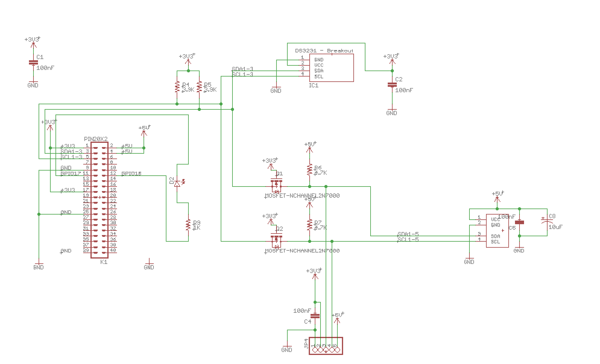
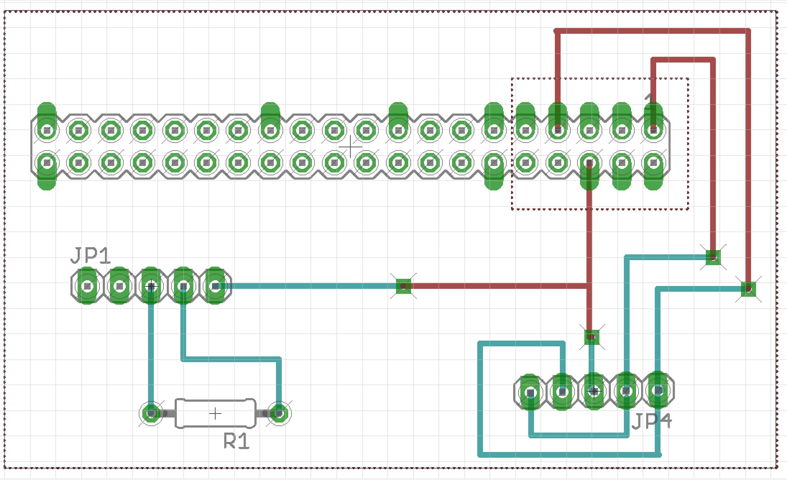
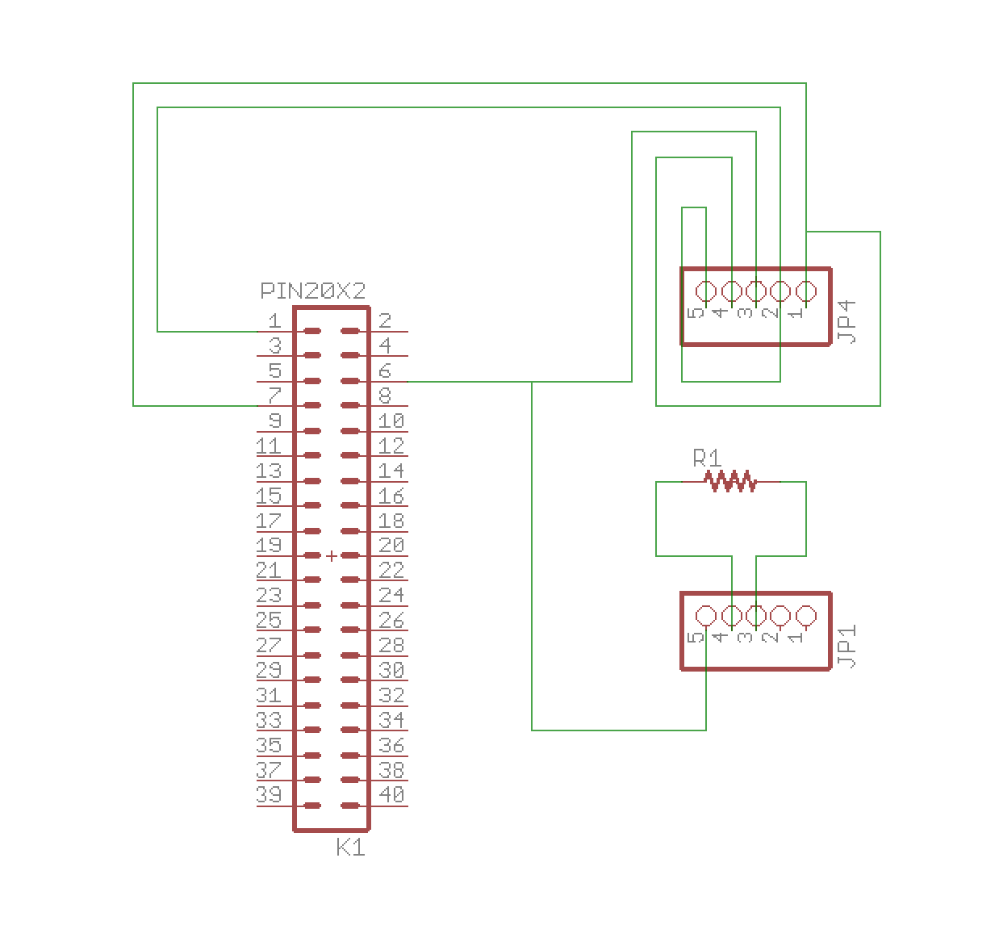

Solar Panel Project Build Instructions
Introduction
Welcome to Salvatore's Build Instructions page. This page contains all the knowledge nesscessary in order to reporduce the solar panel project. The project was created alongside Richard Burak and Steven Spiteri. An individual should be able to reporduce our project by following these instructions. To anyone actually reporducing our project, I wish you the best of luck in your efforts.
System Diagram
The goal of this project is to get data from a solar panel and display it to a user. It is important to know how the system work to assist in your own assembly of this project. Also important to note that following these instruction will allow you to view the data remotely through SSH and VNC.

Budget
The table below lists the required parts to complete this project. Links have been provided for parts that can be bought online. You could alternatively get most of these parts in person from Sayal Electronics. Some parts can be aquired from Humber College for rental use, these include items such as the soldering iron and soldering iron holder. They have been added regardless for your convienence along with safety glasses to protect yourself.
| Item |
Quantity |
Cost |
Link |
| Raspberry Pi 3 Starter Kit |
1 |
$119.99 |
Link |
| DHT-11 Sensor Brick |
1 |
$4.04 |
Link |
| Barometric Pressure Sensor (BMP180) |
1 |
$8.33 |
Link |
| Sensor Cluster Chip (YL-40) |
1 |
$4.83 |
Link |
| Solar Cell (6V) |
1 |
$5.95 |
Link |
| Soldering Iron (25W) |
1 |
$6.80 |
Link |
| Soldering Iron Holder |
1 |
$4.56 |
Link |
| Lead Free Solder |
1 |
$4.49 |
Link |
| Humber PCB Components Kit |
1 |
$40.00 (Approx.) |
N/A |
| Custom PCB |
1 |
$30.00 (Approx.) |
N/A |
| 5-pin PCB Female Header |
2 |
$1.78 |
Link |
| GPIO Header |
1 |
$2.17 |
Link |
| Laser-cut Acrylic Box |
1 |
Unknown |
N/A |
| Digital Multimeter |
1 |
$14.59 |
Link |
| Safety Glasses |
1 |
$3.99 |
Link |
Time Commmitment
The table below lists the estimated completion time for the various steps in the instructions. This is only an approximation of the time required in order to complete each task so your time may vary. The tasks with the highest amount of time variance are pointed out in the table as well. The project can be completed in about 3 weeks if you have a busy schedule. It is also important that you try to follow the tasks in the order you see them as it is the intended order to complete the tasks and it may take more time if you don't.
| Task |
Required Time(Approx.) |
| Ordering Parts |
1 hr. |
| Parts Delivery |
1 week (Your time may vary) |
| Raspberry Pi Setup |
2 hr. |
| Printing PCBs |
N/A (Depends on your printing device) |
| Soldering PCBs |
3 hr. |
| Testing PCBs |
30 min. |
| Testing Sensors |
2 hr. |
| Connecting Circuits |
10 min. |
| Lazer-cutting Box |
10 min. (Depends on your printing device) |
| Box Assembly |
20 min. |
| Mount Project to Box |
10 min. |
Step 1: Setup The Raspberry Pi
For this step you will need your Raspberry Pi 3 so make sure you have it. Once this step is over you will be able to start using your Raspberry Pi 3.
- Connect your Raspberry Pi 3 to a diaplay via HDMI and also connect a mouse and keyboard via USB type A connector
- Insert micro SD card that comes with your Pi into the micro SD card slot
- Connect power to your Pi via the micro USB connector with the included power cable
- Once power comes on, configure your Pi to use Raspbian OS (on screen instructions will appear)
- Once booted into Raspbian, go to the top right corner of the screen and select the network connection you would like to use (skip this if you are using a wired connection)
- Record the IP address of your device by hovering over the network symbol at the top right of the screen (important for later use)
- Once connected to the internet, open up the command line terminal and update your Pi to the latest packages by issuing the folling command:
- Once the updates are done installing, issue the following command to ensure SSH is enabled:
- mv /boot/boot_enable_ssh.rc /boot/boot.rc
- After that issue the following two commands to install and setup VNC (software used to remotely connect with GUI to the Pi):
- sudo install tightvncserver
- tightvncserver
- Setup a password for VNC when prompted and then run the following command to start the process to enabling I2C:
- Use arrow keys to navigate to "Advanced Options" and then hit enter
- Navigate to "I2C" and hit enter and select the "Yes" option
- Download the example.py python script and with a USB flash drive transfer it to the desktop on your Pi
- Once this is done make sure to shut down your Raspberry Pi and disconnect it from power
Congrats, you have just completed step 1 and you can now move on to step 2.
Step 2: Soldering/Testing the PCBs
- Download and print the Humber PCB, I printed mine off at Humber College at the prototype lab
- Solder the Humber PCB according to the schematic
- The parts you will need for this circuit board are indicated on the board and schmatic file, if you printed it off at the prototype lab at Humber College then they will provide you with the parts needed.
Download the board file
Download the schematic file


- Download and print the custom PCB, I printed mine off at Humber College at the prototype lab
- Solder the custom PCB according to the schematic
- The parts you will need for this PCB are:
- 5-pin Female Header x 2
- GPIO Header x 1
- 10K ohm resistor (from Raspberry Pi kit) x 1
Download the board file
Download the schematic file


- To test out your PCBs, use a digital multimeter to measure the resistance of the pads you soldered
- Use the circuit schematic and board file to know where you need to check
- If there is zero resistance between connections in the circuit you should be good
- To double check, plug 3.3V into your custom PCBs and use the digital multimeter and check again
- If there is still zero resistance between connections in the PCB then you are good and it is safe to plug into your Raspberry Pi
- If you happen to get infinite resistance between connections then that means that there is a problem in your PCB, if that happens use these hints to troubleshoot:
- Check to make sure that your solder is on the pad and isn't flowing over as this causes a short circuit
- Check to make sure that all the pads are soldered as this will cause the electricity to not flow if there is no connection
Step 3: Testing Sensors/Circuit Assembly
In this step you will be using the BMP180, YL-40 and the DHT-11 sensors. Keep in mind to check to see your pinouts when you connect your sensors to the system as there is a possibility that you can damage your sensors, your Raspberry Pi and or your PCBs that you worked so hard to put together.
- Connect your Humber PCB to the Raspberry Pi, making sure that the pin 1 on the PCB matched the pin 1 on the Raspberry Pi
- Connect the BMP180 to the RTC header on the Humber PCB, making sure that V, G, SC and SA are all connected properly to the header
- Connect the YL-40 to the ADC header on the Humber PCB, making sure that V, G, SC and SA are all connected properly to the header
- Once these components are connected properly, turn your Pi on by pluging in the power, opening up a command line terminal and issuing the following command:
- If these two sensors are connected properly you should see the following output:
- 0 1 2 3 4 5 6 7 8 9 a b c d e f
00: -- -- -- -- -- -- -- -- -- -- -- -- --
10: -- -- -- -- -- -- -- -- -- -- -- -- -- -- -- --
20: -- -- -- -- -- -- -- -- -- -- -- -- -- -- -- --
30: -- -- -- -- -- -- -- -- -- -- -- -- -- -- -- --
40: -- -- -- -- -- -- -- -- 48 -- -- -- -- -- -- --
50: -- -- -- -- -- -- -- -- -- -- -- -- -- -- -- --
60: -- -- -- -- -- -- -- -- -- -- -- -- -- -- -- --
70: -- -- -- -- -- -- -- 77
- If you don't recieve this output then make sure to check two things:
- Check to make sure that you connected everything properly, ensuring that the pinout on your sensors match the input of the correct headers
- Check to make sure that your chips aren't damaged or have malfunctioned
- Once that is all done make sure to shut down the Raspberry Pi and disconnect it from power. Then connect the Custom PCB to the Humber PCB GPIO header, also making sure that pin one lines up with pin 1 on the Humber PCB.
- To ensure you have installed this part correctly it should be sitting ontop of the Humber PCB and sticking out away from the Pi, unlike the Humber PCB which doesn't stick out away from the Pi.
- After you have double checked and connected it properly, connect the DHT-11 to the Custom PCB
- Make sure to connect it to the proper 5-pin header, use the board and schematic file to locate the proper header. Also make sure that the V, G and S pinout on the DHT-11 also match the proper holes. This board has been made in such a way to support different DHT-11 pinouts
- Once you are for certain that it has been connected properly, plug the solar panel into the V and G on the other 5-pin header
- Make sure to follow the board and schematic files close as two of the headers are not connected to anything
- After that use a wire to connect the AD2 pin on the YL-40 to the proper header on the same 5-pin header as the solar panel
- Make sure the use the board and schematic file to locate the proper header
- Lastly once you have everything connected, properly power on the Raspberry Pi
- Navigate to the desktop with the follwing command:
- Then issue the following command:
- This will run the final code, to ensure everything works properly follow these:
- Ensure that the barometric pressure readings are somewhat accurate, use the internet to check, this will ensure that the BMP180 is working properly
- Ensure that the voltage reading from the solar panel is not constantly zero, you can test this by shining a bright light on the solar cell, this will ensure that the YL-40 is working properly
- Ensure that the temperature reading is somewhat accurate, use you local thermometer to check, this will ensure that the DHT-11 is working properly
- If one of the following are not working as intended you can also look at the LED on the Humber PCB to look for a status. If the light is red, it is indicating that one or more of the sensors are not working or connected properly. If it is green then it is indicating that everything is good
Congrats you are all done step 3 and you are over half way done, good job! Make sure to shut down
Step 4: Box Creation
In this step you will be creating the box to put your project into. After this step is completed you will be completely done with the project so keep up the good work! It is important to note that you will need access to a laser cutter and the Coral Draw program. If you don't have access to either of these things then make sure to visit Humber College as they have computers with this software installed. Also you will need acrylic
- First, download the project box file
- Open the file in Coral Draw since it is a Coral Draw file, if you don't have this program on your computer then make sure to visit Humber College as they have computers with this software installed
- Use the print option under the file tab to send your file to a laser cutter
- Once the acrylic box has been cut out then you can glue and or tape it together, I reccomend tape for the average user as you need a special glue in order to glue the acrylic together. If you are at Humber College anyways, then just glue your box together as it will look cleaner. Make sure to leave the top unglued/untaped as it is the only way you can get access to the Raspberry Pi
- After you have glued it all together then you can screw the standoffs to the four holes in the bottom of the box
- Then you can screw your Raspberry Pi to the bottom of the box so that it doesn't move inside the box
- You will have to unplug the solar panel from the custom PCB and the power cable to put the Raspberry Pi, but make sure to route the solar panel cables trought the holes in the side of the case to the same location and replug your Pi back in if you want to turn it back on.
- Screw the Raspberry Pi to the standoff and you should be all finished
Congrats you have completed the project!
Conclusion
This project will take you about 3 weeks to complete with a busy schedule and requires a bit more knowledge of computers than the average person. By following these instructions you should be able to reproduce the project. The only downside or holdback is that this project requires big expensive equipement (like the laser cutter or PCB printer) to reporduce and if you don't have access to Humber's or any other equivilent equipment, you won't be able to replicate this project 100%. That said if you get crafty and know a little bit about circuits and computers then you should be able to replicate the circuit from a bread board and atleast have it working. If this project were to become mass producable then I would change the PCB design to be condensed into one PCB so that it is easier to manufacture.